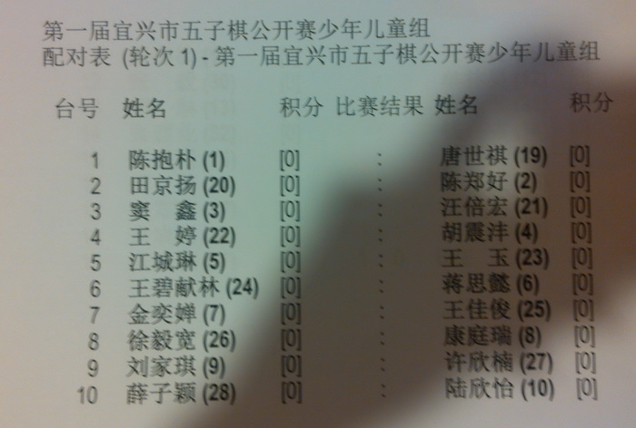

宜兴五子棋公开赛第一轮对阵表
首页
江苏五子棋
#1 宜兴五子棋公开赛第一轮对阵表 作者：风吹那蓝 发表时间：2013-8-16 22:50:36


［此帖子已被 小丸.net 在 2013-8-16 23:26:15 编辑过］
#2 Re:宜兴五子棋公开赛第一轮对阵表 作者：风吹那蓝 发表时间：2013-8-16 22:51:31
我第一款轮对周楠，加油
#3 Re:宜兴五子棋公开赛第一轮对阵表 作者：鱼岛岛主 发表时间：2013-8-16 22:53:45
图 挂了
#4 Re:宜兴五子棋公开赛第一轮对阵表 作者：问题不大 发表时间：2013-8-17 0:37:51
艾亚平是艾显平打错了，还是高飞的弟弟啊？
#5 re:宜兴五子棋公开赛第一轮对阵表 作者：小丸.net 发表时间：2013-8-17 7:01:19
高飞的胞弟 艾亚平
#6 Re:宜兴五子棋公开赛第一轮对阵表 作者：无敌小旋风 发表时间：2013-8-17 8:10:52
#7 Re:宜兴五子棋公开赛第一轮对阵表 作者：无敌小旋风 发表时间：2013-8-17 8:11:30
不是有张建业的吗，怎么没看到
#8 Re:宜兴五子棋公开赛第一轮对阵表 作者：陈国良 发表时间：2013-8-17 10:42:42
张建业第一轮和棋，在少儿组